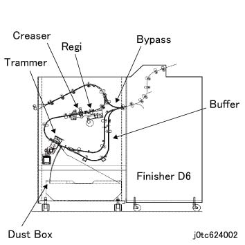

6.2.5.5 TCBM/TBM 概述 
此 post-processing 设备 cuts the 顶部 和 底部 of 输出 纸张 in 纸张 feeding 方向, puts 折痕 on 纸张 perpendicularly to 纸张 feeding 方向 (TCBM 仅), 和 堆叠 和 输出 two pieces of 纸张 together.
It 已安装 在...之前 装订器 D6, comes 和/与 以下 features, 和 由...控制 CDI 通过 装订器 D6.
手送: 传输 纸张 到 subsequent 设备 没有 post-processing by 本设备.
Regi: Corrects 纸张 歪斜 和 检测 the 侧面 Regi 位置.
折痕: Puts 折痕 in perpendicular 方向 to 纸张 feeding 方向.
裁切器: 裁切 the 顶部 和 底部 of 纸张 in 纸张 feeding 方向.
Waste Container: 存储 the trimmed 纸张 strips.
缓冲: Overlays two pieces of 纸张 to 输出 them to 小册子 of 装订器 D6.

(图 1) tc624002